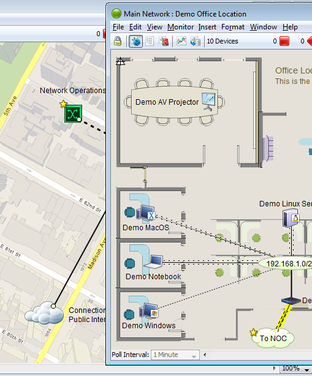

Use this on-line manual to learn about
how to get InterMapper up and running
quickly
Use this manual to learn about how to get InterMapper up and running quickly, and to get detailed information about specific features of the program.
InterMapper has several components that work together to help you understand what's happening on your network:
The core functionality of the product that gathers data about your network, and provides polling, alerting, notifications about its operation.
Uses NetFlow, sFlow and J-Flow data to provide detailed information about the kinds of data flowing through the network.
Several additional components that enhance InterMapper. Includes access to external authentication servers and a PostgreSQL database.
A GUI application that allows you to view and configure your InterMapper system from any location.
In addition, you can customize InterMapper's operation in a number of ways. The Developer Guide/Software Development Kit is described separately.
Background on the InterMapper
program
Install and launch
InterMapper
Learn how to have InterMapper automatically discover devices on
your network, add devices
Learn about how to change device icons, background images, and labels on your maps, how to arrange devices, and how to manage large numbers of devices easily.
Learn about the different kinds of notifications you can use to alert you of problems in your network.
Learn about the Server
Settings window
References
Explains the features
of each menu
Detailed explanation of all available InterMapper probes, how to configure them, and how to use them.
Learn about the locations of InterMapper files and folders, how to make backups, and about icon locations and how to create custom icons.
Learn about the InterMapper web-based server interface.
Telnet Server
Command Reference
Learn about the InterMapper Telnet-based server interface, including a full reference of InterMapper's Telnet-based commands.
Lists many of the questions our users have asked. Loaded with tips about how you can use InterMapper to help you manage your network.
Please give us comments at the address listed below. Thanks!